ASTRONOMICAL HERITAGE
The Billingborough Astronomer
Edward Iszatt Essam and the astronomical life of Billingborough more than a century ago.

Billingborough Post Office and drug store, formerly operated by Edward Iszatt Essam. Photograph reproduced with permission of the Aveland Archive and Aveland History Group.
A village with an astronomical past
Billingborough has a remarkable astronomical history. At the centre of that story was Edward Iszatt Essam (1855–1931), a chemist, druggist, postmaster, photographer, telescope maker and active amateur astronomer who lived and worked in the village during the closing years of the nineteenth century.
Essam's astronomical work was not confined to private observation. He contributed observations and drawings to contemporary astronomical publications, participated in the observing programmes of the British Astronomical Association, and was elected a Fellow of the Royal Astronomical Society in 1898.
The surviving evidence reveals a remarkably active observer. He studied Jupiter and Saturn, observed a solar eclipse, recorded an aurora, contributed observations of star colours and used a succession of telescopes, several of which he constructed himself.
Much of Essam's astronomical life can now be reconstructed from contemporary publications and surviving British Astronomical Association records. Other questions remain open, particularly the precise location and construction of his observatory and the later fate of his telescopes.
Edward Iszatt Essam
Edward Iszatt Essam was born in Lincolnshire in 1855 at Aslackby Fen, close to Billingborough. By 1891 he was living at 23 High Street, Billingborough, where the census records him as a chemist's assistant.
How Essam's business began
The public examination held following Essam's bankruptcy in 1907 provides an unusually detailed glimpse into how he established himself in Billingborough. He had previously worked as a chemist's assistant before starting his own business in the village in 1893.
He acquired the existing business of Miss Smith for £200, despite having no capital of his own. The purchase was financed through borrowing, including £50 from his cousin, £100 from Mr Smith of Horbling, and £100 from the Sewards.
This gives a rather different picture of Essam from that of a comfortably wealthy gentleman amateur. He was a provincial chemist building a business from the beginning, and doing so with borrowed money.
That background is potentially significant when considering his astronomical activities. During the same period he was constructing telescopes of his own and developing increasingly substantial astronomical equipment. The surviving evidence does not establish how that equipment was financed, but it does show that his astronomical work developed alongside a relatively modest, debt-financed provincial business.
Postmaster and druggist
In 1893 Essam succeeded William Forster Smith as proprietor of the village Post Office and drug store. Contemporary newspaper reports noted that his appointment was popular. He remained in Billingborough until 1907, when his business came to an end and he left the village.
He therefore combined several roles in village life: chemist and druggist, postmaster and, increasingly, astronomer. Contemporary advertisements identify the business as E. Essam, Drug Stores, Billingborough, Lincs.
His professional life was closely tied to the village, while his astronomical interests developed alongside his commercial work.
Essam and the British Astronomical Association
Essam was involved with the British Astronomical Association from its early years. A BAA membership record records Edward Essam of Lincolnshire among members elected in 1892.
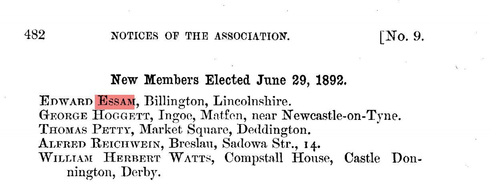
British Astronomical Association membership record, 1892, recording Edward Essam of Lincolnshire among newly elected members. Source: British Astronomical Association. Reproduced with permission.
During the 1890s he contributed observations to the Association's planetary observing sections, including Jupiter and Saturn. His work included detailed observations and drawings of the planets.
Essam's astronomical work was subsequently recognised more widely. He was elected a Fellow of the Royal Astronomical Society in 1898.
The observatory and Essam's telescopes
Essam's observations from Billingborough were made with a succession of instruments. The surviving records show that he was not simply a user of commercially produced telescopes: he had the practical skills to construct astronomical optical equipment himself.
The precise location and physical form of his observatory have not yet been established. Contemporary records do, however, repeatedly place his observations at Billingborough, and one BAA record specifically associates a substantial collection of instruments with him there.
PRIMARY SOURCE
Essam's self-made refractor, 1892
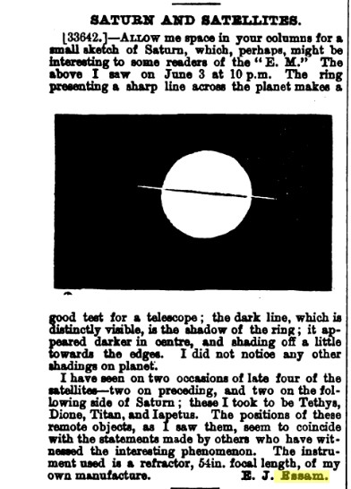
Edward Essam's report of an observation of Saturn made on 3 June 1892, published in The English Mechanic and World of Science, Vol. 55, 17 June 1892, p. 382.
Essam reported observing Saturn at 10 p.m. and described the appearance of the rings and four satellites, identified as Tethys, Dione, Titan and Iapetus.
Particularly significant is his statement that the instrument was a refractor with a 54-inch focal length, of his own manufacture.
PRIMARY SOURCE
Essam's 8½-inch mirror, 1893
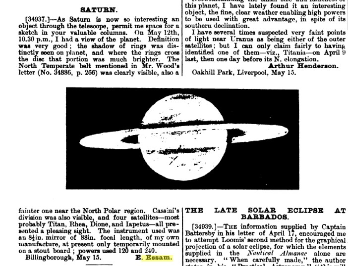
Extract from Edward Essam's report of an observation of Saturn from Billingborough, published in The English Mechanic and World of Science, Vol. 57, 26 May 1893, p. 310.
In May 1893 Essam described an observation of Saturn made with an 8½-inch mirror having an 88-inch focal length. He explicitly stated that it was of his own manufacture and recorded using powers of ×120 and ×240.
He described Saturn's rings, Cassini's Division, the North Temperate Belt and several satellites. The instrument was temporarily mounted at the time.
PRIMARY SOURCE
Essam's 4¼-inch refractor, 1894
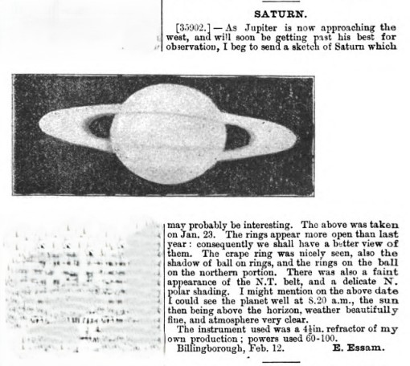
Extract from Edward Essam's report of his observation of Saturn from Billingborough, published in The English Mechanic and World of Science, Vol. 59, 23 February 1894, p. 10.
In another report Essam described an observation of Saturn made on 23 January 1894. He recorded the appearance of the rings, the shadow of Saturn on the rings, the North Temperate Belt and polar shading.
He stated that the instrument was a 4¼-inch refractor of his own production, used at powers of ×60 to ×100.
PRIMARY SOURCE
Essam observes Jupiter, 1896
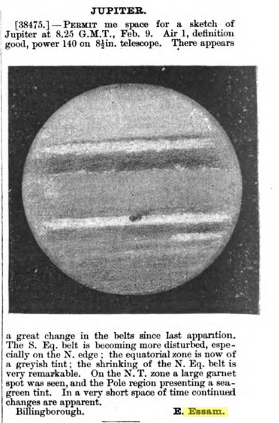
Extract from Edward Essam's report of his observation of Jupiter from Billingborough, published in The English Mechanic and World of Science, Vol. 63, 28 February 1896, p. 35.
Essam reported an observation of Jupiter made at 8:25 GMT on 9 February 1896, using a power of ×140 on an 8½-inch telescope. He recorded changes in the planet's belts and a prominent Great Red Spot.
CONTEMPORARY CORRESPONDENCE
Essam's Jupiter drawing prompts discussion
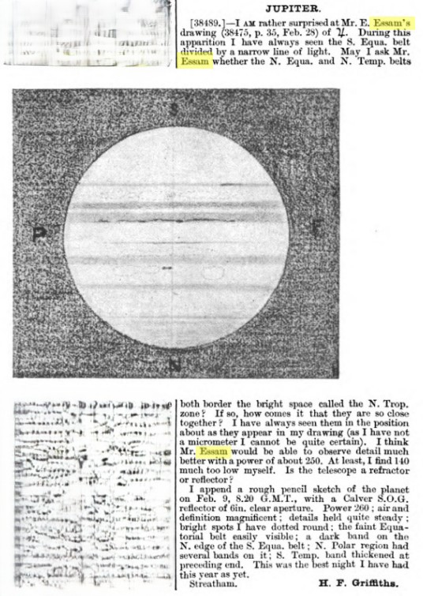
Correspondence referring directly to Edward Essam's Jupiter drawing, published in The English Mechanic and World of Science, Vol. 63, 6 March 1896, p. 55.
In the following issue another observer referred directly to Essam's Jupiter drawing and questioned the appearance of features in Jupiter's equatorial and temperate belts.
The exchange shows that Essam's observations were being read, compared and discussed by other contemporary observers. His drawings therefore formed part of a wider network of visual planetary observation rather than remaining solely as private records.
PRIMARY SOURCE
Essam's 12-inch reflector, 1897
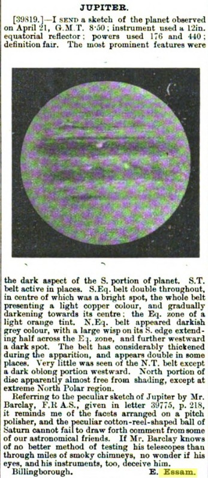
Edward Essam's report of an observation of Jupiter made on 21 April 1897 from Billingborough, published in The English Mechanic and World of Science, 1897.
On 21 April 1897 Essam reported observing Jupiter with a 12-inch equatorial reflector, using powers of ×176 and ×440. The observation was accompanied by a drawing of Jupiter.
This provides contemporary evidence for a substantially larger instrument than the 8½-inch telescope he had reported using in earlier observations.
Contemporary BAA equipment records also associate Essam with several instruments at Billingborough, including a 12-inch reflector, a 3-inch refractor and a 4¼-inch optical instrument.
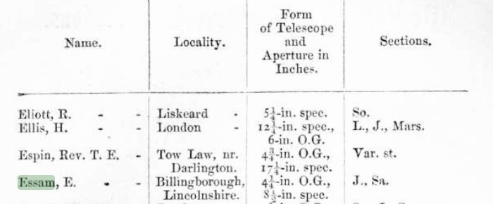
British Astronomical Association equipment record listing Essam of Billingborough with a 12-inch reflector, a 3-inch refractor and a 4¼-inch optical instrument. Source: British Astronomical Association. Reproduced with permission.
Taken together, these records suggest that Essam maintained or developed more than one instrument over the course of the 1890s. The precise relationship between the individual telescopes, including the 8½-inch self-made mirror and the later 12-inch reflector, remains an area for further research.
Observing Saturn
Saturn was one of Essam's principal astronomical interests. Contemporary records show him making detailed visual observations of the planet from Billingborough and submitting observations and drawings to astronomical publications and societies.
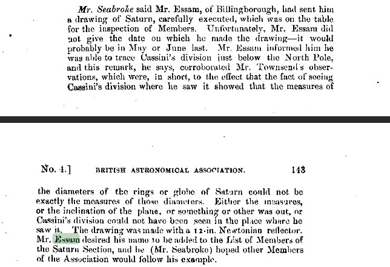
Contemporary British Astronomical Association report discussing Essam's observations of Saturn and Cassini's Division. Source: British Astronomical Association. Reproduced with permission.
His Saturn observations demonstrate the careful visual observing practice of the period: repeated examination, attention to subtle planetary features and comparison with observations made by other astronomers.
Observing the solar eclipse of 1895
One of the most revealing surviving records is Essam's report of the partial solar eclipse of 26 March 1895.
PRIMARY SOURCE
Essam's 1895 eclipse observation
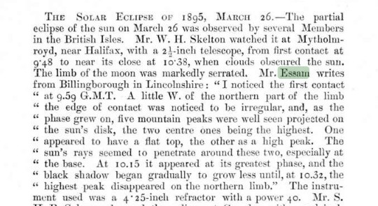
Extract from the British Astronomical Association report of the partial solar eclipse of 26 March 1895, including Essam's observation from Billingborough. Source: British Astronomical Association. Reproduced with permission.
Observing from Billingborough, Essam recorded first contact at 9:59 GMT. He carefully described irregularities in the Moon's limb and the changing appearance of lunar mountain peaks projected against the Sun.
He recorded the greatest phase at 10:15 and noted the gradual withdrawal of the Moon's shadow beginning at approximately 10:32.
The report identifies the instrument used as a 4¼-inch refractor operating at ×40.
An aurora over Billingborough
Essam's interests extended beyond planned observations of the planets. In correspondence to the BAA he described an auroral display observed from his garden at Billingborough in February 1894.
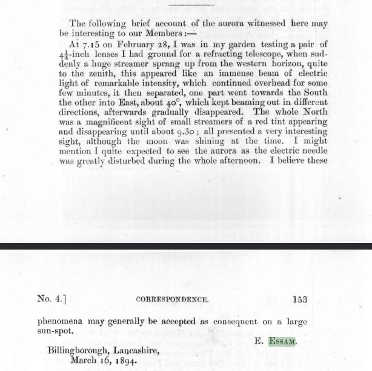
Extract from Essam's correspondence to the British Astronomical Association describing an auroral display observed from his garden in Billingborough in February 1894. Source: British Astronomical Association. Reproduced with permission.
He described a large streamer rising from the western horizon and changing in appearance and direction as the display developed. The account provides another direct contemporary record of Essam observing the sky from Billingborough.
The colours of the stars
Essam also participated in the BAA's Star Colours Section, which collected systematic visual observations of the apparent colours of stars.
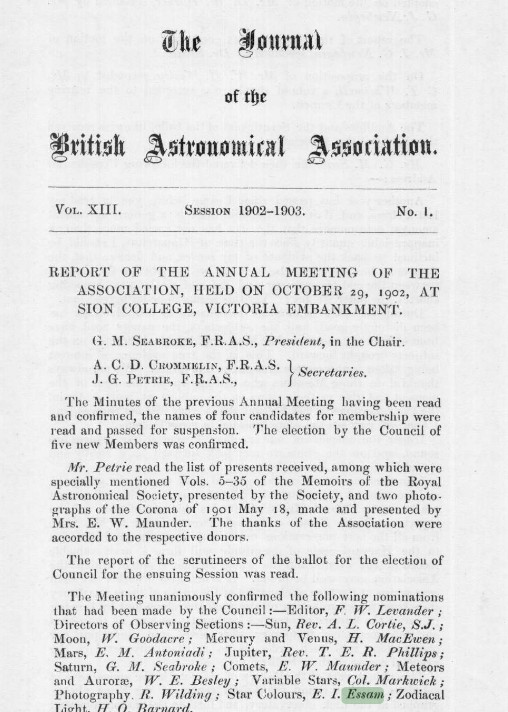
British Astronomical Association records concerning Edward Essam and the Star Colours Section. Source: British Astronomical Association. Reproduced with permission.
By the beginning of the twentieth century Essam had taken on a formal role within the section. The BAA's current historical record lists him as Director from 1901 to 1902.
A historical printed BAA record gives a different end date for his directorship. The discrepancy is retained here rather than silently resolved and remains part of the ongoing historical investigation.
Photography and the 1905 solar eclipse
Essam's scientific interests also extended into photography. A contemporary newspaper report from September 1905 records that Mr. Essam, F.R.A.S., had secured some interesting photographs of the solar eclipse.
This provides evidence that his astronomical activity was not limited to visual observation and drawing. By the early twentieth century there is also contemporary evidence that he had secured photographic records of astronomical events.
The end of the Billingborough years
Essam's long association with Billingborough came to an abrupt end in 1907. Contemporary newspaper reports show that his commercial affairs had deteriorated and that he was declared bankrupt.
CONTEMPORARY NEWSPAPER RECORD
Bankruptcy, 1907
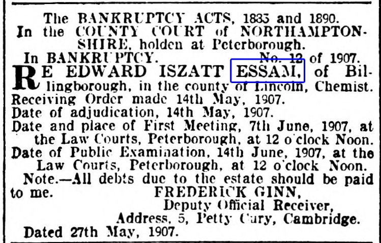
Contemporary newspaper report concerning the bankruptcy of Edward Iszatt Essam, Billingborough, May 1907.
The surviving newspaper record documents the formal bankruptcy proceedings. A notice dated 27 May 1907 records the receiving order made on 14 May 1907 in the case of Edward Iszatt Essam of Billingborough, chemist. It gives the date of the first meeting of creditors as 7 June and the public examination as 14 June, both at the Law Courts in Peterborough.
Essam's financial position
The public examination gives a much clearer picture of the scale of Essam's financial difficulties. His gross liabilities were £1,412 5s 8d, while liabilities expected to rank for dividend amounted to £652 15s 8d. His assets were estimated at approximately £377 10s, leaving a reported deficiency of £275 5s 8d.
The financial arrangements surrounding the business were also substantial. The freehold shop, house and premises were subject to a first mortgage of £500 and a second mortgage of approximately £327 19s 6d. Two life policies, each valued at £100, had also been assigned.
The public examination provides a breakdown of the estimated assets: approximately £200 in stock-in-trade, £30 in fixtures, £60 in furniture and £87 in book debts.
These figures show that Essam's financial difficulties were not a minor setback. By the summer of 1907 his liabilities substantially exceeded the value of the assets available to meet them.
The timing is particularly striking. Within days of the bankruptcy proceedings, notices appeared for the sale of Essam's household possessions, including his astronomical equipment.
THE ASTRONOMICAL EQUIPMENT
The telescopes are offered for sale
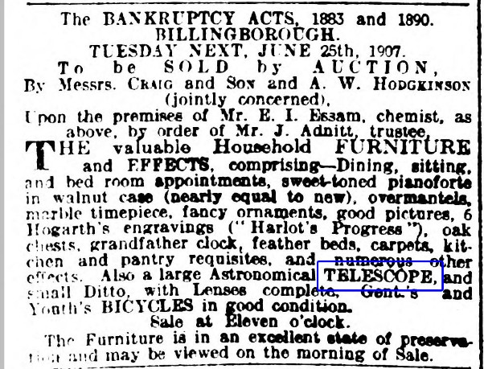
1907 auction notice listing Edward Essam's astronomical equipment among the possessions offered for sale.
One of the most important discoveries in the surviving newspaper material is the auction notice issued following the bankruptcy. Among the household and personal effects it lists:
“Also a large Astronomical TELESCOPE, and small Ditto, with Lenses complete.”
This is direct contemporary evidence that Essam still possessed at least two astronomical telescopes at the end of his Billingborough period.
It is not yet possible to prove which of these instruments corresponded to the 12-inch reflector, the earlier 8½-inch mirror or the other telescopes documented during the 1890s. Discovering what happened to these instruments after the sale is an important continuing research objective.
Newspaper reports also record that Essam's postmastership became vacant following his resignation and that he was shortly to leave the town. The 1907 material therefore marks not simply the end of his business in Billingborough, but the end of the period in which his astronomical work was centred on the village.
The photograph
A historic photograph has survived showing two men with a substantial telescope. The man on the right has been proposed as Edward Essam. The photograph is not currently known to the British Astronomical Association, and the identification cannot yet be regarded as proven.
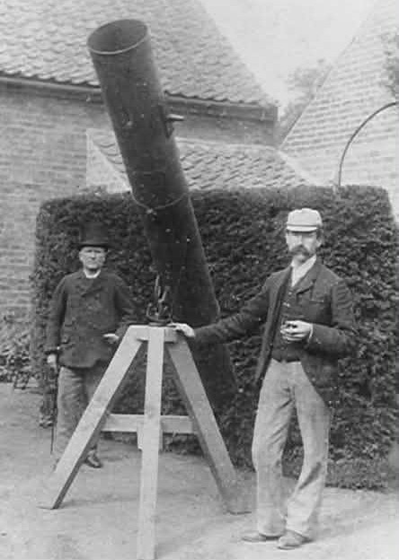
Historic photograph showing two men with a substantial telescope, circa 1895. The man on the right has been proposed as Edward Iszatt Essam. Photograph courtesy of Robin Freer. Original photograph held by Lincs Inspire, Grimsby Local History Library, ref. NEL13979.
Dr. Richard McKim FRAS, BAA Archivist, has examined the photograph and found it unfamiliar, but considered there was no reason to think that Essam could not be the man on the right. He also noted that the telescope appears to be a long-focus instrument with a particularly rigid and heavy mounting.
The photograph is especially interesting in light of the documentary evidence that Essam constructed and used substantial telescopes and still owned at least two astronomical instruments when his affairs collapsed in 1907. Whether the instrument shown in the photograph can be identified with one of those telescopes remains unresolved.
From Billingborough to Lancashire
Essam left Billingborough in 1907. Later records place him first away from the village and subsequently in Lancashire, where he continued his life after the end of his Billingborough business.
A later obituary described Essam as a former chemist and postmaster, noted his strong interest in astronomy, and stated that he had made many powerful telescopes. It also attributed a comet discovery to him. The comet claim is an intriguing lead, but it requires independent verification before it should be treated as established fact.
A continuing astronomical story
More than a century later, Billingborough Observatory continues that astronomical tradition using modern telescopes, digital cameras and automated meteor detection.
The instruments have changed enormously. The curiosity has not.
Research into Edward Iszatt Essam's observatory, instruments, observations and life is ongoing. Where the surviving evidence is uncertain, this website distinguishes documented facts from interpretation and questions that remain unresolved.
Sources & acknowledgements
This history draws on contemporary astronomical publications, British Astronomical Association records, newspapers, census material and research into the history of Billingborough and Lincolnshire.
- British Astronomical Association — contemporary membership records, observing reports, correspondence, equipment records and illustrations from the Association's historical publications. Illustrations are reproduced with permission of the British Astronomical Association.
- The English Mechanic and World of Science — contemporary observations and correspondence by Edward Essam, including reports of observations of Saturn and Jupiter and descriptions of his telescopes.
- Stamford Mercury — contemporary reports concerning Essam's life and career in Billingborough, including his postmastership, civic activities and the events surrounding his 1907 bankruptcy.
- Aveland Archive and Aveland History Group — historical information relating to Billingborough Post Office and drug store and the historic photograph reproduced above.
- Society for the History of Astronomy — research relating to astronomical observatories and astronomers in Lincolnshire.
- Lincs Inspire / Grimsby Local History Library — historic photograph of Edward Essam and the telescope, ref. NEL13979.
The historical photograph of Billingborough Post Office and drug store is reproduced with permission of the Aveland Archive and Aveland History Group. British Astronomical Association illustrations are reproduced with permission of the BAA.
← Back to the observatory